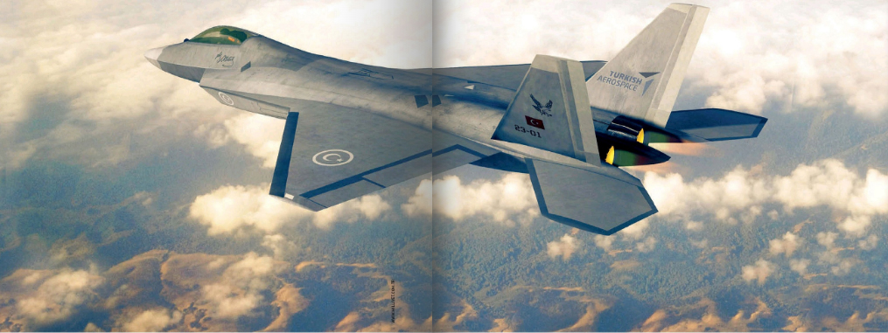

РУССКО-ТУРЕЦКИЕ ВОЙНЫ, А ИХ БЫЛО ДВЕНАДЦАТЬ, ОСТАВИЛИ ЗАМЕТНЫЙ СЛЕД В ИСТОРИИ ОБОИХ ГОСУДАРСТВ В ДАВНЕЙ ИСТОРИИ. В ПОСТСОВЕТСКОЕ ЖЕ ВРЕМЯ ТУРЦИЯ В СОЗНАНИИ ЖИТЕЛЕЙ НАШЕЙ СТРАНЫ БЫА СВЯЗАНА В ОСНОВНОМ С КУРОРТАМИ И ШОППИНГОМ. ВСЁ ИЗМЕНИЛОСЬ ПОСЛЕ ТОГО, КАК РОССИЙСКО-ТУРЕЦКИЕ ИНТЕРЕСЫ СТОЛКНУЛИСЬ В СИРИИ. ИМЕННО ТОГДА ВОЕННАЯ МОЩЬ ЮЖНОГО СОСЕДА ОКАЗАЛАСЬ ПРЕДМЕТОМ БОЛЬШОГО ИНТЕРЕСА И ШИРОКОГО ОБСУЖДЕНИЯ
